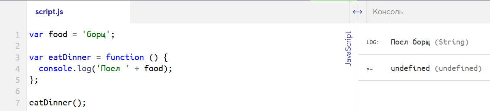
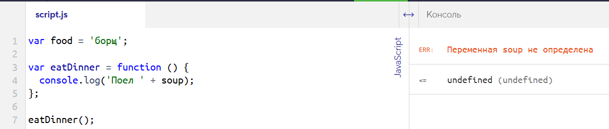

Локальная область видимости ограничена функцией, поэтому мы не можем получить переменные функции извне. Но внутри функций, а не снаружи, всё работает по-другому.
Если внутри функции есть обращение к какой-то не локальной переменной, JavaScript обратится на уровень выше, за пределы функции, чтобы найти необходимую переменную. Говорят, что чтение переменных происходит изнутри области видимости наружу.
var food = 'салат';
var eatDinner = function () {
// Внутри функции не объявлены локальные переменные
console.log('Поел ' + food);
};
eatDinner();
// Функция обратится к переменной food,
// которая объявлена снаружи eatDinner
// Выведет: Поел салат
В нашем примере переменная food объявлена не внутри какой-то функции. Она объявлена на уровне всей программы, поэтому её видно отовсюду, то есть можно использовать внутри любой функции. Такие переменные, которые объявляются на самом верхнем уровне, вне каких-то функций, называются глобальными. А область видимости, в которой они находятся, называется глобальной областью видимости. Из названия понятно, что переменные из этой области видимости видны по всему коду программы и доступны во всех блоках кода.
Если внутри функции будет обращение к переменной, которая не объявлена ни в одной области видимости, консоль выдаст ошибку.
var food = 'борщ';
var eatDinner = function () {
console.log('Поел ' + food);
};
var food = 'борщ';
var eatDinner = function () {
console.log('Поел ' + food);
};
eatDinner();

var food = 'борщ';
var eatDinner = function () {
console.log('Поел ' + soup);
};
eatDinner();